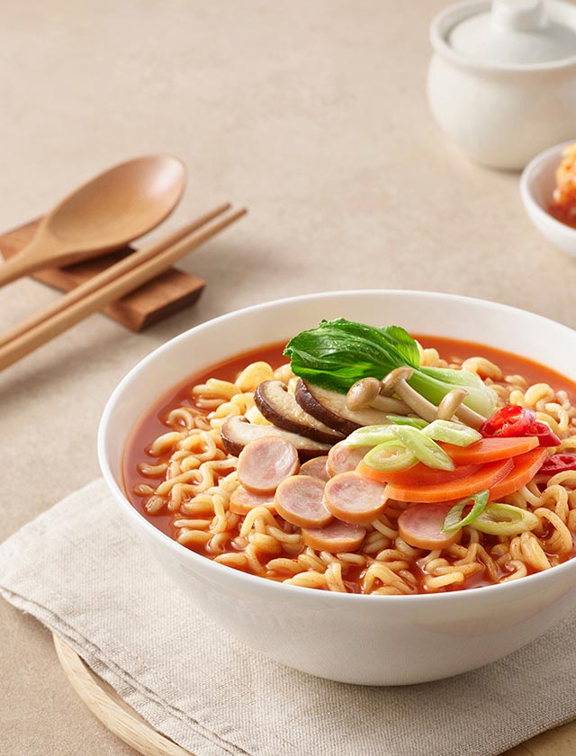
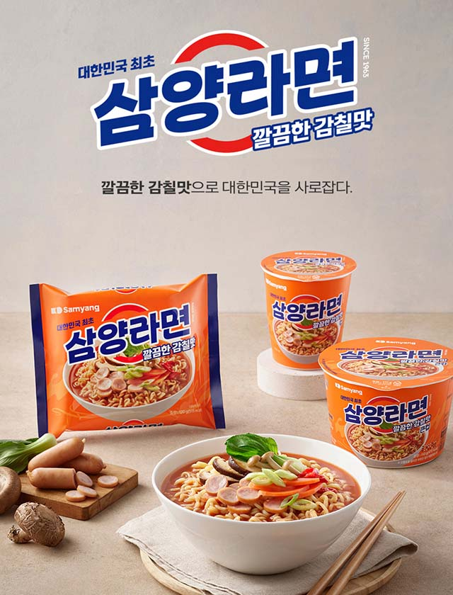

Samyang Foods
라운드와 스퀘어의 만남을 통해
메인 비쥬얼
00
00
- 
- 
-
국내 식품 산업에 큰 획을 긋다
라면에 대한 열정과 신념 1961년 창업한 삼양식품은 ‘정직과 신용’의 정신으로 한국 식품산업의 새로운 영역을 개척했습니다.
더 알아보기
1960년대 식량난 극복과 1970년대 식생활 개선에 앞장섰으며, 현재는 한국의 맛과 문화를 전 세계에 전하는 글로벌 종합식품기업으로 성장하고 있습니다. -
국내 최초 라면 ‘삼양라면’ 출시
1963년 9월, 역사적인 첫 걸음 1960년대 식량난 속에서 故 전중윤 선대회장은 일본에서 기술을 도입해 1963년 9월 15일 국내 최초의 라면인 삼양라면을 출시했습니다.
더 알아보기
이후 라면은 제2의 주식으로 자리잡으며 한국의 새로운 식문화를 만들어갔습니다. -
글로벌 K-Food 열풍
불닭 브랜드로 세계 시장을 사로잡다 1969년 베트남 첫 수출을 시작으로 현재 90여 개국에 제품을 수출하고 있습니다.
더 알아보기
특히 불닭브랜드의 글로벌 인기로 해외사업이 급격히 성장하며 삼양식품은 세계인의 입맛을 사로잡는 K-Food 대표 기업으로 자리매김하고 있습니다. -
최고의 제품과 서비스 제공
신뢰할 수 있는 품질, 차별화된 연구 삼양식품은 세계 최고 수준의 생산시설과 연구소를 보유하고 있으며, 원재료 조달부터 생산, 품질 관리, 유통까지 완벽한 수직 계열화 시스템을 통해 글로벌 경쟁력을 강화하고 있습니다.
더 알아보기
앞으로도 계열사와의 협력을 통해 시너지를 창출하며 글로벌 종합 식품 기업으로 성장하겠습니다.

ESG
지속가능경영을 통해
더 알아보기
지속가능경영을 통해
건강하고 즐거운 세상
더 알아보기
-
ESG 전략체계
세상을 건강하게 하는 자양분이 되는 기업
-
환경경영
저탄소·친환경 체계 구축
-
사회적가치경영
지속가능한 안전하고 건강한 일터
-
책임경영
투명하고 공정한 거버넌스 체계를 구축
- Global Advancement Performance
- Global Advancement Performance
전 세계가 사랑하는 삼양의 맛
삼양식품은 1969년 국내 라면 최초로 해외 시장에 진출하며, 현재 전 세계 90여 개국에서 사랑받고 있습니다.
불닭브랜드의 글로벌 인기를 기반으로 해외 매출 80% 달성이라는 성과를 이루었으며,
월마트, 코스트코 등 글로벌 유통망을 통해 한국 식품의 우수성을 널리 알리고 있습니다.
공지사항
-
라면은 언제, 어디서, 어떻게 만들어 졌나요?
인스턴트 라면은 1958년 일본에서 개발되어 시판되었습니다. 라면 유래에 대해서는 중국의 상용식인 '건면'에서 유래 되었다는 설과 일본에서 자체 개발했다는 두가지 설이 있습니다.
25.09.26
-
국내 최초 라면 '삼양라면'은 어떻게 만들어졌나요?
故 전중윤 명예회장님이 남대문 시장을 지나가던 중 사람들이 꿀꿀이 죽을 사먹기 위해 줄을 서 있는 것을 보았습니다. 이를 안타깝게 생각한 명예회장님은 일본에서 보았던 편리하고 쉽게 먹을 수 있는 라면의 국내 생산을 꿈꾸게 되었고, 1963년 국내 최초의 라면을 개발하였습니다.
25.09.26
-
삼양식품은 어떤 제품을 생산하고 있나요?
삼양식품은 1963년 국내 최초의 라면을 시작으로 안전하고 영양이 풍부한 식품을 공급하기 위해 노력하고 있습니다. 현재는 라면류뿐 아니라 스낵류, 소스류 등을 생산하며 ‘정직’ 과 ‘신용’을 통해 소비자를 위한 제품 생산에 노력하는 종합식품기업입니다
25.09.25
-
사이트 이용시, 별도 회원가입을 해야하나요?
삼양식품 사이트 내 에서는 별도 회원가입 없이 글쓰기 및 이벤트 참여 등이 가능합니다. 단, 고객문의를 남겨주실 경우 답변에 필요한 개인정보(성함 / 휴대폰 / 이메일 등)를 수집할 수 있으니 홈페이지 하단의 '개인정보처리방침' 내용을 참고 부탁드립니다.
25.09.22